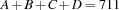
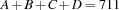
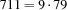

4.1 Example: Grocery
This example illustrates that elimination of symmetries can dramatically reduce the size of search trees.
Problem Specification
A kid goes into a grocery store and buys four items. The cashier charges $7.11, the kid pays and is about to leave when the cashier calls the kid back, and says ``Hold on, I multiplied the four items instead of adding them; I'll try again; Hah, with adding them the price still comes to $7.11''. What were the prices of the four items?
Model
Our model has four variables  ,
,  ,
,  , and
, and  , which stand for the prices of the four items. In order that the variables can be constrained to finite domains of integers, we assume that the prices are given in cents. To say that the sum of the four prices is 711, we impose the constraint , and to say that the product of the four prices is 711, we impose the constraint
, which stand for the prices of the four items. In order that the variables can be constrained to finite domains of integers, we assume that the prices are given in cents. To say that the sum of the four prices is 711, we impose the constraint , and to say that the product of the four prices is 711, we impose the constraint

The model admits many different equivalent solutions since the prices of the items can be interchanged. We can eliminate these symmetries by imposing an order on the prices of the items, for instance,

With these ordering constraints the model has a unique solution.
Distribution Strategy
For this problem it is advantageous to use a first-fail strategy that splits the domain of the selected variable and tries the upper part of the domain first. This strategy leads to a much smaller search tree than the standard first-fail strategy, which tries the least possible value of the selected variable first.
proc {Grocery Root}
A#B#C#D = Root
S = 711
in
Root ::: 0#S
A+B+C+D =: S
A*B*C*D =: S*100*100*100
%% eliminate symmetries
A =<: B
B =<: C
C =<: D
{FD.distribute generic(value:splitMax) Root}
end
Figure 4.1: A script for the Grocery Puzzle.
Script
The script in Figure 4.1 spawns a search tree with 5039 nodes. It will explore 566 nodes before it finds the unique solution 120#125#150#316. Without the ordering constraints the script explores more than three times as many nodes before finding a first solution. We learn that the elimination of symmetries may make it easier to find the first solution.
A Subtle Symmetry
There exists another symmetry whose elimination leads to a much smaller search tree. For this we observe that 711 has the prime factor 79 (). Since the product of the prices of the items is 711, we can assume without loss of generality that 79 is a prime factor of the price A of the first item. We adapt our script by replacing the statement A=<:B with
A =: 79*{FD.decl} The procedure {FD.decl X} constrains its argument to an integer in the finite domain 0#sup, where sup stands for a large implementation-dependent integer (134217726 in Mozart on Linux or Sparcs).
The new propagator for A=:79*X reduces the search tree of Grocery to 357 nodes, one order of magnitude less than before. The solution of the problem is now found after exploring 44 nodes.